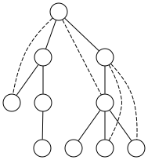

DFS¶
The DFS algorithm is one of the graph traversal methods and one of the simplest and most fundamental graph algorithms. Despite its simplicity, it has interesting features, and contrary to common perception, it is widely used in solving theoretical and practical problems!
1def DFS(v):
2 visited[v] = True # v ra didim
3 for u in adjacency[v]:
4 if not visited[u]:
5 DFS(u)
First Problem¶
Suppose you are trapped in a maze represented as a graph. Each vertex of the graph represents a room, and each edge represents a corridor between two rooms. Your memory is strong enough to recognize if you enter a room you've visited before, and when in a room, you can only see its adjacent corridors. You have a thread with you - one end is tied to the starting room, and the other end is in your hand. There's a treasure in one of the graph's vertices. Your goal is to find the treasure. How would you accomplish this?
Finding the treasure can be achieved by following this algorithm until you reach the treasure:
If all adjacent rooms are duplicates, return to the room from which you first entered the current room (simply follow the thread in your hand).
Otherwise, go to one of the non-duplicate adjacent rooms.
Why does this algorithm solve our problem? The key point is that when we first enter a room, we make every effort to find a path to the treasure from that room. Therefore, when all adjacent rooms become duplicates and we follow the thread back, we can conclude there's no path to the treasure from that room. Hence, we should never enter this room again. (This logic of avoiding duplicate rooms stems from this very reasoning).
Another perspective: For any edge \(uv\), if we see one of \(u\) or \(v\), we'll certainly see the other. (Because we only finish working with a vertex when all its neighbors are duplicates). Therefore, if we see one vertex in a connected component, we'll eventually see all other vertices in it.
Connected Components¶
You are given a graph \(G\). You need to find the number of connected components in this graph.
What we examine in this section provides an overview of the DFS algorithm. Assume the array "mark" indicates which vertices have been previously visited, and all its entries are initially false. Our algorithm will be as follows:
for each vertex v in G:
if mark[v] == false:
dfs(v)
component_count += 1
1dfs(v):
2 mark[v] = true // we start from here
3 for all neighbors u of v:
4 if mark[u] == false:
5 dfs(u) // we check all vertices connected to this vertex

In this approach, we traverse all vertices. Whenever we encounter an unvisited vertex, we perform a DFS from it and increment the component counter. This way, we visit all vertices connected to it, and each complete DFS call corresponds to one connected component.
void dfs(int u){
mark[u] = true;
for(int y : g[u])
if(mark[y] == false)
dfs(y);
}
Use the intuition we gained from solving the previous problem. When dfs(u) is called, the algorithm attempts to recursively visit all vertices reachable from \(u\). Then dfs(u) completes, and we return to a vertex called \(par\) from which we first reached \(u\).
Consequently, we can see that after executing this function, all vertices in the connected component of the starting vertex will have been visited. Therefore, to solve the problem, it suffices to select a vertex \(y\) whose mark is false at each step. Then we execute dfs(y) and increment the problem's solution count by one.
1int mark[MAXN];
2vector<int> adj[MAXN];
3
4void dfs(int u, int par) {
5 mark[u] = true; // mark the node
6 for (auto v : adj[u]) {
7 if (!mark[v]) { // if not visited
8 dfs(v, u); // continue DFS
9 }
10 }
11}
12
13int count_components(int n) {
14 int cnt = 0;
15 for (int y = 1; y <= n; y++) { // iterate through all nodes
16 if (!mark[y]) { // if node is unmarked
17 cnt++; // increment component count
18 dfs(y, -1); // start DFS with parent -1
19 }
20 }
21 return cnt; // return total components
22}
DFS Tree¶
The DFS algorithm not only traverses our graph but does so in a specific manner! Now we’ll explore some interesting properties of this traversal.
Assume the graph's edges are initially blue. Whenever the algorithm is at vertex \(v\) and traverses edge \(uv\) to reach a new vertex \(u\), we color the edge \(uv\) red.
First, note that the red edges form a tree! This is because every time a red edge is added, one of its endpoints connects to a previously unseen vertex. Thus, it’s as if we’re adding leaves one by one to this tree! We call this tree generated by the DFS algorithm the DFS tree. A fascinating property of DFS is that when the execution of dfs(u) begins, the vertex \(u\) is a single leaf in the red tree, and when dfs(u) terminates, the subtree of \(u\) is fully constructed. Therefore, after running the DFS algorithm on a connected graph, we obtain a spanning tree of the graph. Root this spanning tree at the starting vertex.
Now, observe an intriguing property about the remaining blue edges.
We call an edge \(uv\) a back edge if one of \(u\) or \(v\) is an ancestor of the other. Otherwise, it’s called a cross edge. Some classifications might separate tree edges (edges of the tree itself) from back edges, but here we consider all non-tree edges as back edges and stick to these two categories.
Claim: For any DFS tree, all edges of the graph are back edges!
{kind=link}

To prove that all edges become back edges after a DFS traversal, consider an arbitrary edge \(uv\). Without loss of generality, assume we first visit vertex \(u\). At the start of dfs(u), vertex \(v\) has not been visited yet. However, by the time dfs(u) finishes, vertex \(v\) must have been visited (since it’s adjacent to \(u\)). Thus, in the DFS tree, vertex \(v\) must lie within the subtree of \(u\)! This implies \(u\) is an ancestor of \(v\), making the edge \(uv\) a back edge.
Later, we will frequently use this theorem—that all edges become back edges after DFS—in various applications!
Maximal Path and DFS¶
In Chapter 1, we became familiar with proofs that utilized maximal paths. Here, we will learn that instead of using maximal paths, we can use the leaves of the DFS tree (which provides a much stronger intuition)!
After performing DFS on the tree, the number of back edges where \(u\) is the lower vertex is denoted by \(back_u\). Note that the edges of the DFS tree are also considered back edges according to our definition. Additionally, the height of vertex \(u\) in the tree is denoted by \(h_u\).
The following two theorems are easily derived from the specific structure of the tree (the second theorem holds under the assumption that the graph is simple):
\(\sum back_u = m\)
\(\forall_u back_u \leq h_u\)
We prove that a simple graph contains a path of length at least \(\delta\). It suffices to prove that the height of the DFS tree is at least \(\delta\). Consider an arbitrary leaf such as \(u\). It is clear that \(back_u \geq \delta\), hence \(h_u \geq \delta\), which straightforwardly yields our claim!
We prove that a simple graph contains a path of length at least \(\frac m n\). Similar to the previous approach, we prove that the height of the DFS tree is at least \(\frac m n\). For the proof, we use contradiction. Assume the height of every vertex is less than \(\frac m n\). Then we have:
\(m = \sum back_u \leq \sum h_u < n \times \frac m n = m \Rightarrow m < m\)
which leads to a contradiction. Therefore, there exists a vertex with height at least \(\frac m n\), proving our claim.
Suppose after applying the DFS algorithm, the height of the tree becomes \(H\) (i.e., \(H\) is the maximum value among all \(h_u\)). Also, assume the number of leaves is \(S\).
Here we prove that \(H \times S \geq n-1\).
For each leaf in the tree, trace the path from that vertex to the root and place a stone on each vertex of this path except the root. For each leaf like \(u\), the total number of stones increases by \(h_u\). On the other hand, we have placed at least one stone on each vertex except the root, so the total number of stones is at least \(n-1\). Therefore, we can write:
\(n-1 \leq \sum h_u \leq H \times S\)
which proves our claim. However, so far we have not used any specific property obtained from the DFS tree! The interesting point is that the leaves of the DFS tree form an independent set. (Because the existence of an edge between two leaves would create a cross edge.)
Thus, if the size of the maximum independent set is \(S^{\prime}\), then \(S \leq S^{\prime}\) holds.
Similarly, if the length of the longest path in this graph is \(H^{\prime}\), then \(H \leq H^{\prime}\) holds.
Therefore, we now arrive at the interesting inequality: \(n-1 \leq H \times S \leq H^{\prime} \times S^{\prime}\)!
The noteworthy point is that both problems of finding the maximum independent set and the longest path in a graph are NP-hard! However, with the method we presented, we can either provide an independent set of size at least \(\sqrt{n-1}\) or a path of length at least \(\sqrt{n-1}\)!
Non-Cut Vertex¶
We prove that every graph with \(n > 1\) vertices has at least two non-cut vertices.
It suffices to perform DFS on the graph. Then each leaf of the DFS tree will be a non-cut vertex (even if we remove both of these vertices, the graph remains connected). This is because the edges of the DFS tree maintain the connectivity of the rest of the graph (and removing a leaf from a tree does not disconnect it). Furthermore, every tree with \(n>1\) has at least two leaves, which proves our claim. Note that in this problem, using a DFS tree was not strictly necessary—any arbitrary spanning tree would have solved the problem for us.
Tree Traversal¶
One of the special cases of graph traversal is tree traversal. In this section, we'll see how tree traversal can be implemented more simply using DFS algorithm. For example, we no longer need a mark array since the only adjacent vertex that might have been visited before is the parent of the current vertex.
Additionally, we can simultaneously gather other information about the tree during DFS execution. For instance, in the following code after running DFS on the tree, the number of vertices in each subtree is stored in the sz array, and the height of each vertex is stored in the h array.
Note that we assume tree vertices are indexed starting from 1, and there's no vertex with index 0.
int sz[MAX], h[MAX];
vector<int> adj[MAX]; // لست مجاورت
void dfs(int v, int parent = -1) {
sz[v] = 1;
for (int u : adj[v]) {
if (u != parent) {
h[u] = h[v] + 1;
dfs(u, v);
sz[v] += sz[u];
}
}
}
// در برنامه اصلی:
// dfs(1); // farakhani ba rishe 1
const int maxn = 1e5 + 10;
vector <int> g[maxn];
int sz[maxn], h[maxn];
void dfs(int u, int par = 0){
h[u] = h[par] + 1;
sz[u] = 1;
for(int y : g[u]){
if(y != par){
dfs(y, u);
sz[u] += sz[y];
}
}
}
This book is made by The Shaazzz contributors.
It is publicly available with cc-by-sa license.
Last updated at سپتامبر 30, 2025.
Rendered by Sphinx (4.3.2) and Minoo theme (Beta 0.9.7).